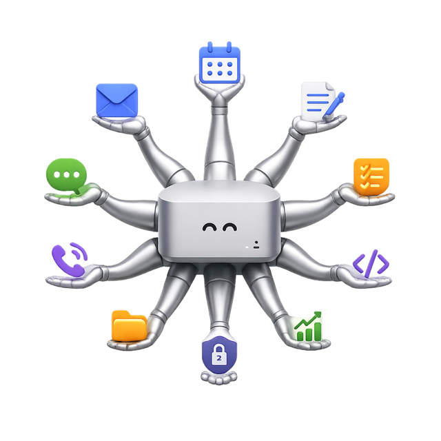

Talks to you planned
Telegram, Signal, and its own email account.
Kastellan reads your mail, searches the web, runs code, and remembers what matters — and it cannot reach anything you didn’t explicitly allow. Every tool runs in its own kernel sandbox. Every plan is reviewed before a single tool fires.
A castellan is the officer a lord entrusts to hold a stronghold: full authority within the walls, none to act beyond them.
$ cargo install kastellan-core
# v0.1.0 on crates.io

One OS process and one kernel jail per tool — bubblewrap, Landlock, and seccomp on Linux; Seatbelt on macOS. A compromised tool reaches its own short allowlist. Never the next tool’s. Never the core.
Every plan the agent forms is reviewed before any tool runs — against five constitutional constraints that no user, admin, or configuration change can override.
Telegram, Signal, and its own email account.
Web search and page fetch, host-allowlisted; a sandboxed browser is next.
Python in a no-network scratch jail.
Postgres memory with semantic, lexical, and graph recall.
Distils successful runs into reusable skills — gated on your approval.
An append-only audit log of every action, enforced by the database itself.
Phase 0 — Sandboxed core (done) · Phase 1 — Memory & agent loop (done) · Phase 3 — Web egress (in progress) · Channels · python-exec · frontier gate (planned)
Rust, security review, docs, red-teaming — contributions welcome.
Start contributing